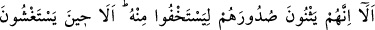
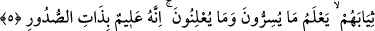

başkasına ibâdet ve itaat edip onu sevdiğiniz takdirde Allah’tan kopmak ve cehennemde
uzaklık ateşinde kalmakla sizi uyarıyorum. O’na ibâdet ve itâat edip O’nu sevdiğiniz
takdirde ise O’na vâsıl olacağınızı müjdeliyorum. Celâl yurdundaki bu vuslat ne kadar
güzeldir.
Nebîler ve mürseller arasında Nebî (a.s.) Allah’a bu tür dâvet etme görevi ile özel
olarak görevlendirilen tek peygamberdir. Şu âyet buna delâlet etmektedir: “Ey
Peygamber! Biz seni hakikaten bir şâhit, bir müjdeleyici ve bir uyarıcı olarak
gönderdik. Allah’ın izniyle bir dâvetçi ve nûr saçan bir kandil olarak (gönderdik).”
(el-Ahzâb, 33/45-46)
“Ve” Allah’ı talep etmeyi bırakıp O’ndan başkasını talep etmekle, mânevî hicablar
peşinde koşup fıtrî istidâdı yok etmekle zâyi ettiğiniz ömrünüz konusunda
“Rabb’inizden mağfiret dileyesiniz” ta ki bu istiğfar/mağfiret dileme, nefisleriniz için
tezkiye, kalbleriniz için de tasfiye olsun. “sonra da O’na tevbe edesiniz ki” sülûk ayağı
ile Allah Teâlâ’ya dönün ki istiğfar ile tezkiyeden sonra tahliye (manen süsleyip
güzelleştirmek) olsun. İşte “sizi belirlenmiş bir süreye” seyr ü sülûk mertebelerinin
bitip vusûl derecelerinin başlamasına “kadar güzelce yaşatsın” ifadesi bundan
ibârettir. Bu ise süflî mertebelerden yüce makamlara, yüce makamlardan da O en yüce
ve en büyüğün huzuruna yükselmektir.
“ve her lütuf sâhibine” talebinde sâdık ve gayretli herkese vusûl derecelerini
“lütfetsin.” Çünkü müşâhedeler mücâhedeler nisbetinde olur.
“Eğer” talep ve seyr ilallah’tan “yüz çevirirseniz,” de ki: “ben sizin için büyük bir
günün azâbından” yani Allah’tan kopma gününün büyük azâbından “korkarım.” Çünkü
bu kopuş en büyük günahların en büyüğü ve buna verilecek azab da en büyük musibettir.
İsteseniz de istemeseniz de “dönüşünüz Allah’adır.” O’na isteyerek dönerseniz, O da
inâyet cezbeleri ile size yaklaşır. Nitekim kudsî bir hadiste: “Bana bir karış yaklaşana
ben bir arşın yaklaşırım.”[93] buyrulmuştur. İstemeyerek dönerseniz, yüzüstü âteşe
atılıverirsiniz. “O,” gerek lütuf gerekse kahırdan olsun “her şeyi yapacak güçtedir.”
5. İyi bilin ki onlar O’ndan gizlenmek için göğüslerini çevirirler. Yine iyi bilin ki
onlar örtülerine büründükleri zaman dahi (Allah onların) gizlediklerini de açığa
vurduklarını da bilir. Çünkü O, kalplerin özünü bilendir.
Ey mü’minler, “iyi bilin ki onlar” yâni Mekke müşrikleri “O’ndan gizlenmek için”
Allah Teâla hakkında câiz olmayan şeyleri bilmediklerinden Allah Teâlâ’dan gizlenmek
için “göğüslerini çevirirler.” Göğüslerinde olan küfür, haktan yüz çevirme ve Nebî